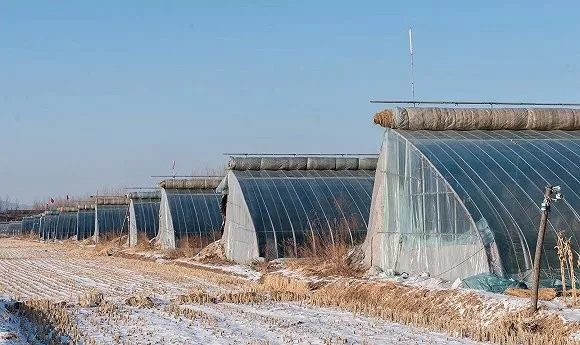
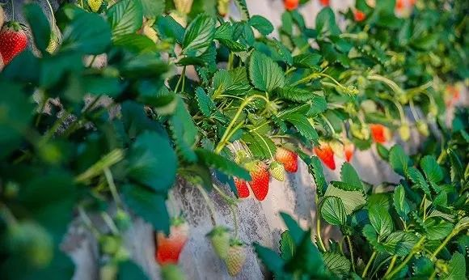

对话吴海：国家已经决定要帮助企业渡过难关，希望我的呼吁能救更多中小企业
原文链接 备份链接 图片来源：图虫创意 记者：肖芳 “ 吴海说，他写文章不是为了自己，而是为所有中小企业呼吁。 ” 一场突如其来的疫情，打乱了很多公司正常的经营节奏，中小微企业面临的挑战尤为突出。 2月10日晚，桔子酒店创始人、魅KTV董 …
丹东草莓 （图片来源：谢长城）
记者：马越 编辑：牙韩翔
“
疫情影响下的农产品物流运输、保鲜成了问题，眼下电商几乎成为了唯一的销售渠道。
”
“我们村没有疫情，没有流动人口，草莓摘好就可以马上包装发走。”徐金在朋友圈发送了这样一行文字，并配上了家人在大棚里采摘草莓的小视频，“最低价格了，求转发。”他在评论里补充道。
这个1996年出生的年轻人，去年大学毕业回到辽宁丹东东港老家，帮助打理家里种植的几个大棚的草莓生意。
他刚度过了最为焦灼而忙碌的一个春节——本该正值销售旺季的丹东草莓，却严重滞销了。
疫情在春节前夕来势汹汹。随着防疫政策的升级，村镇封路，在年前已经联系好的外地经销商无法进入。加上城市里大型商超的关闭，大量已经成熟草莓的销售渠道一下子断了。
“就像冬天兜头浇了一盆冷水的感觉”，他对界面新闻形容，因为不光是自家生意，他还负责周边十几家草莓农户的的代销。
整个丹东的草莓总栽培面积超过了20万亩，年产量超过20万吨，这里也是全国最大的草莓生产和出口基地。每年的12月到4月，正是丹东草莓大量上市的季节，其中最主要的品种称之为“丹东99”——已经成为最有品牌效应国产草莓。通常在春节期间，北京、上海等大城市的生鲜超市里，包装精美的丹东99草莓零售价甚至能达到40-50元一斤。

草莓大棚 （图片来源：谢长城）

草莓大棚 （图片来源：谢长城）
“往年在春节前后草莓大量上市的时候，我们这里产地的收购价格是20多块钱一斤。”徐金告诉界面新闻，在疫情爆发后，草莓收购价格暴跌到了每斤2-3元。
在走超市经销商渠道无望的情况下，他和几个同村人开了一辆小货车，在大年初二这天把草莓拉到城里的路边贩卖。“大果15元一斤，小的13元一斤，再小的10元一斤。”同村的另一位草莓种植户谢长城告诉界面新闻。
“真的是白菜价了。”徐金说，在3天时间里只卖掉200多斤。但这种路边摊形式的零售也难以为继。不仅有城管的劝退，在疫情越发严重的情况下，人们也都不出门了。
作为一种娇贵的水果，草莓销售的最大难点在于如何运输和保鲜。而徐金也在考虑，是否可以把草莓深加工，制作为保存期更长的草莓冻干。而他在咨询了当地一家企业后发现，加工成本太高，“2万块的草莓，加工费就要7-8万，做出来大概要花10多万块钱了，产品也没有什么价格优势。”
眼下，他只能寄希望于网络销售，徐金从大二开始，就在淘宝开设了网店，发售一些散单。同时，他和同村的草莓种植户一起，拉了300人左右的微信群，在朋友圈售卖草莓。
幸好顺丰快递还没有停运。他雇佣了20多个乡亲们摘草莓、包装，从早上6、7点一直忙到下午，省内的快递下午发，省外的快递上午发。

丹东99草莓 （图片来源：谢长城）
“每单3斤，加上运费的话是79-89块钱左右。”徐金说，而这个价格也只是勉强保本，如果不能尽快把草莓运输出去，那么它们的结局只能是大批烂在地里。以往商超销售渠道占80%以上，网售只是很小一部分，现在则颠倒了过来，网上渠道占了80%以上。
谢长城以前没有做过电商，在同乡的帮助下，他也开始慢慢摸索网上销售的路子。但目前最大的问题仍然是物流，“现在快递不包时效，我们都是新鲜发出，但路上随时有可能遇到停运的情况，这时候就要重新发，或者赔钱。”他告诉界面新闻。
像徐金和谢长城一样焦虑的农户并不在少数。
事实上，除了草莓之外，全国大量的苹果、枇杷、菠萝蜜、猕猴桃、哈密瓜、春笋、蒜薹等蔬菜瓜果因为受到疫情的影响而滞销。而最近你在微博、微信、抖音、快手、闲鱼、小红书等社交平台上经常可以看到“帮帮我们，XX滞销”的信息。
不过最新的消息是，包括阿里巴巴、京东等电商平台开始主动介入，搭建生鲜频道来帮助这些滞销的农产品销售。
淘宝只用了12小时就上线了一个“吃货助农”频道，第一批筛选了山东、海南、浙江、辽宁等六省十款滞销的农产品，包括丹东草莓、烟台红富士苹果、海南长豆角、临安春笋等上线。
阿里巴巴该项目的负责人告诉界面新闻，现阶段制约商家发货的，除了物流问题，还有人工和包装材料，比如纸箱、泡沫塑料、空气柱等材料十分缺乏。“我们现在几乎所有的商家发货都不是按照产能发货，而是按照运力发货，”他解释称，“比如说今天我只有100个纸箱，就只能发100单，虽然菜还有很多，但是发不出来了。”
好在国内主要快递公司自2月10日起全面复工。按照阿里巴巴对界面新闻的说法，他们有信心在短期内帮助丹东草莓解决10万单，即30万斤草莓的销量。
“我们当下的想法就是，能少亏一点就少亏一点，总比烂在地里强。”徐金说，现在解决燃眉之急的网店订单，主要集中在北京、上海、广州、深圳以及其他主要的几个省会城市，而他已经做好了今年损失大概10万块钱的准备。
“光靠这几个城市购买的话，其实也很难有效解决滞销的问题。”他说，“毕竟他们也不能天天吃草莓。”
（文中”徐金”“谢长城”为化名。）
未经授权 禁止转载

原文链接 备份链接 图片来源：图虫创意 记者：肖芳 “ 吴海说，他写文章不是为了自己，而是为所有中小企业呼吁。 ” 一场突如其来的疫情，打乱了很多公司正常的经营节奏，中小微企业面临的挑战尤为突出。 2月10日晚，桔子酒店创始人、魅KTV董 …
原文链接 备份链接 《创新经济战疫计划》，是燃财经在新型肺炎疫情期间推出的特别栏目，关注创新经济企业遇到的新难题、商讨应该采取的新对策，希望能够帮助中小企业一起战胜挑战、把握机会。本文是第7期。查看前6篇请点击《哪些行业正在逆势爆 …
原文链接 备份链接 2月10日，在上海一家公司，工作人员在车间内作业。 （新华社记者 丁汀/图） 全文共3166字，阅读大约需要7分钟。 千千万万如王平工厂一样的中小企业，是链接上下游的关键。 本文首发于南方周末 未经授权 不得 …
原文链接 备份链接 【财新网】（记者 赵今朝 综合）世卫组织正式将新冠病毒肺炎正式命名 “COVID-19”。疫情形势依然复杂严峻，疑似病人存量缓慢消化，医疗资源“捉襟见肘”，基层社区防控落实不到位。保卫战胶着状态之下，湖北省卫健委骤然 …
原文链接 备份链接 图片来源：视觉中国 记者：侯瑞宁 “ 随着企业陆续复工，私家车出行有一定增加，汽油需求会有好转。短期内，汽油需求难以恢复正常水平。 ” “春节到现在，加油站每天的汽油销售量只有春节前的20%，这两天甚至下降到 …